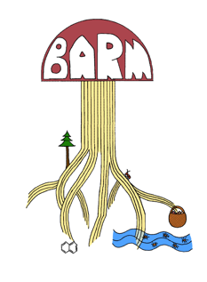

Bay Area Radical Mycology

The Bay Area Radical Mycology Group envisions uses of the fungal kingdom for environmental betterment as an extension
of "radical" or "deep" ecology: we believe that all living things have an inherent value and interdependence.
Through utilizing fungi to enact change we are attempting to shift our relationship with the Earth towards one
of greater balance.
To this end, we are committed to learning and teaching skills such as myco-gardening and permaculture, myco-remediation,
cultivation, identification, medicinal uses, mushroom dyeing and paper-making to help educate on the multiple uses of this amazing
kingdom.
Recognizing our connection to the global web of life, we seek to build a radical mycological movement that is a part of a larger community which is working towards
sustainability through natural practices.